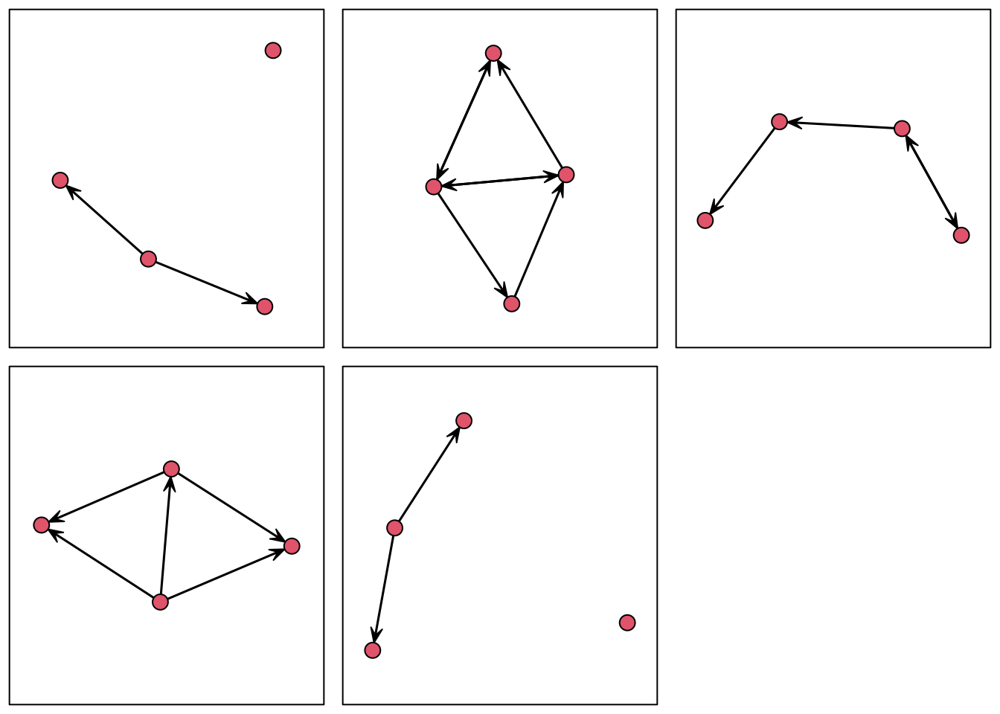
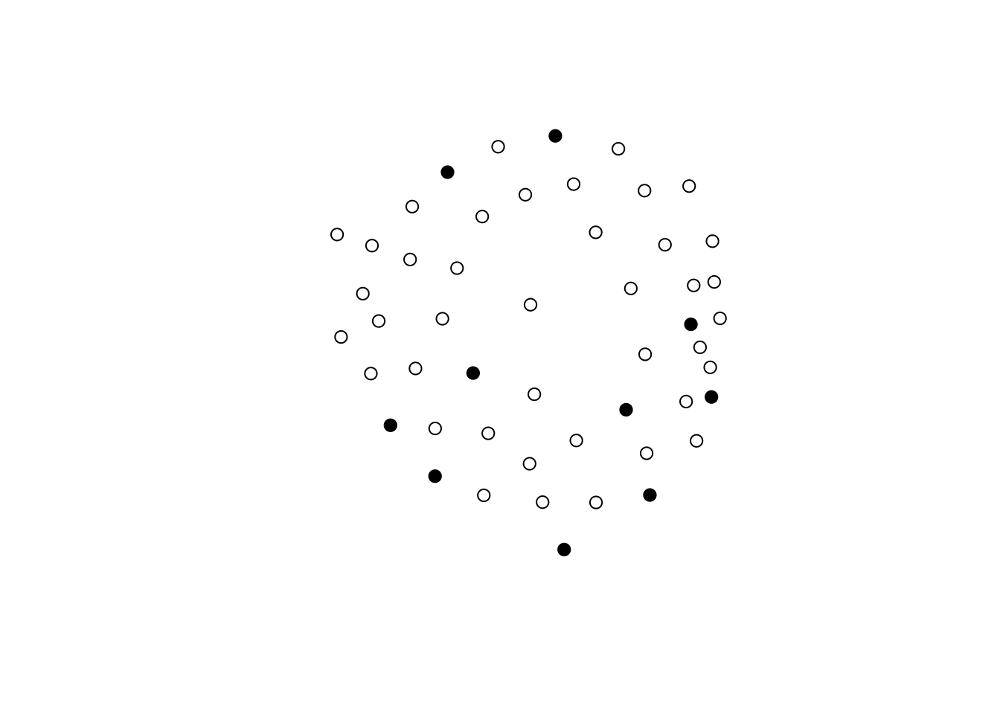
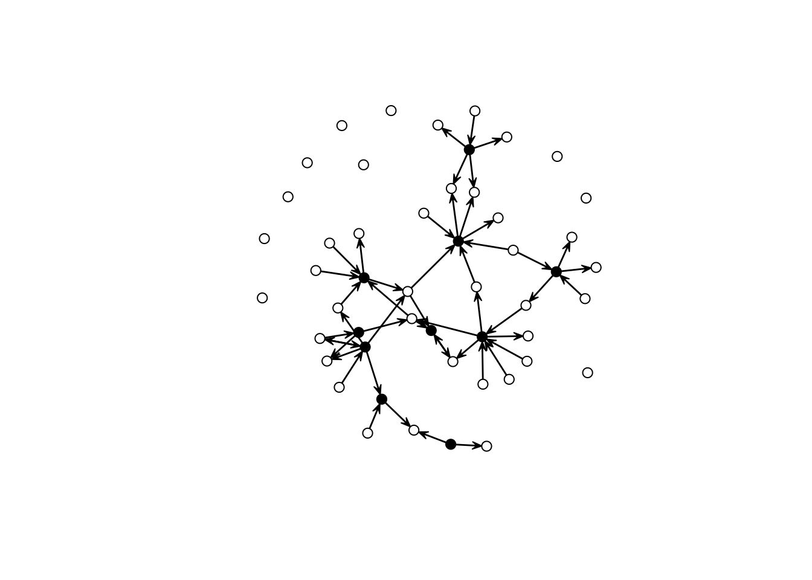
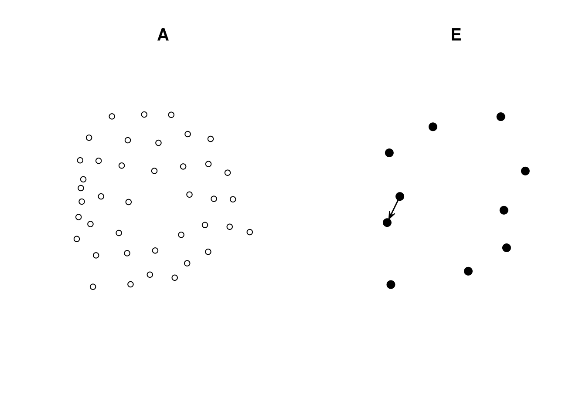
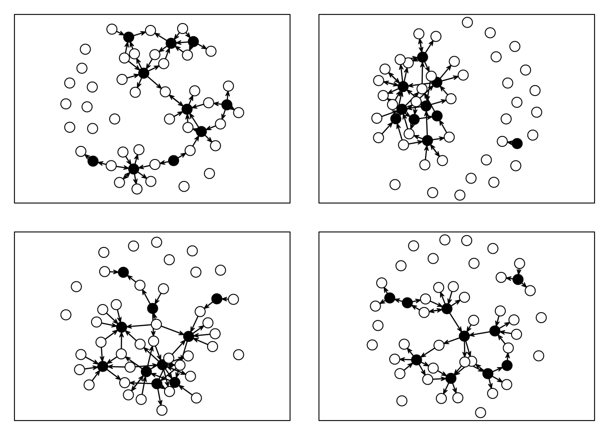
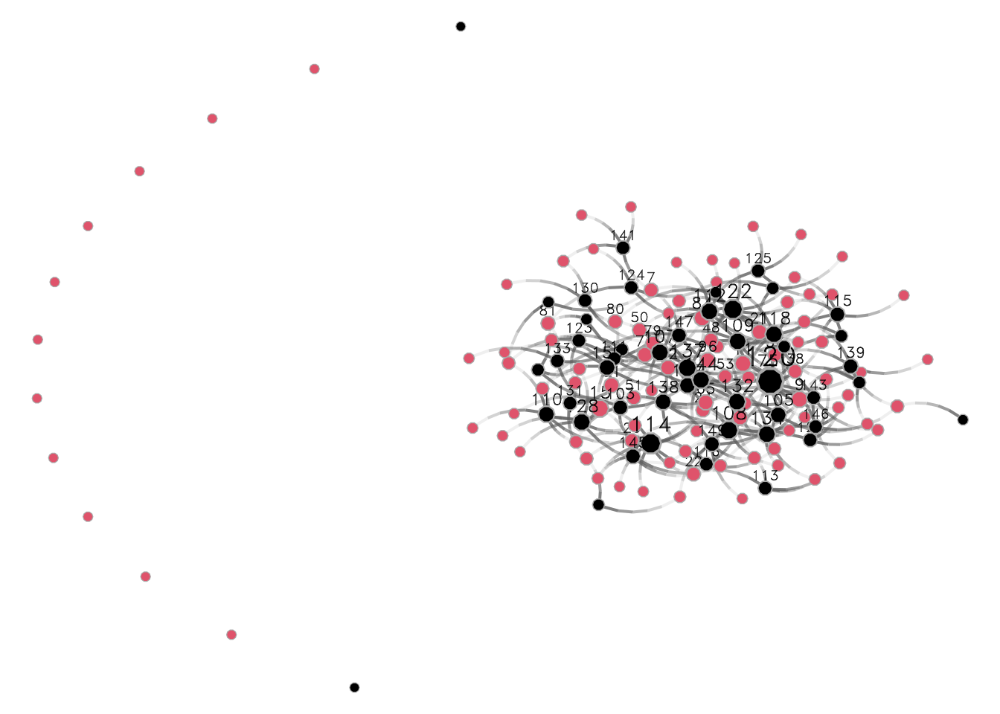
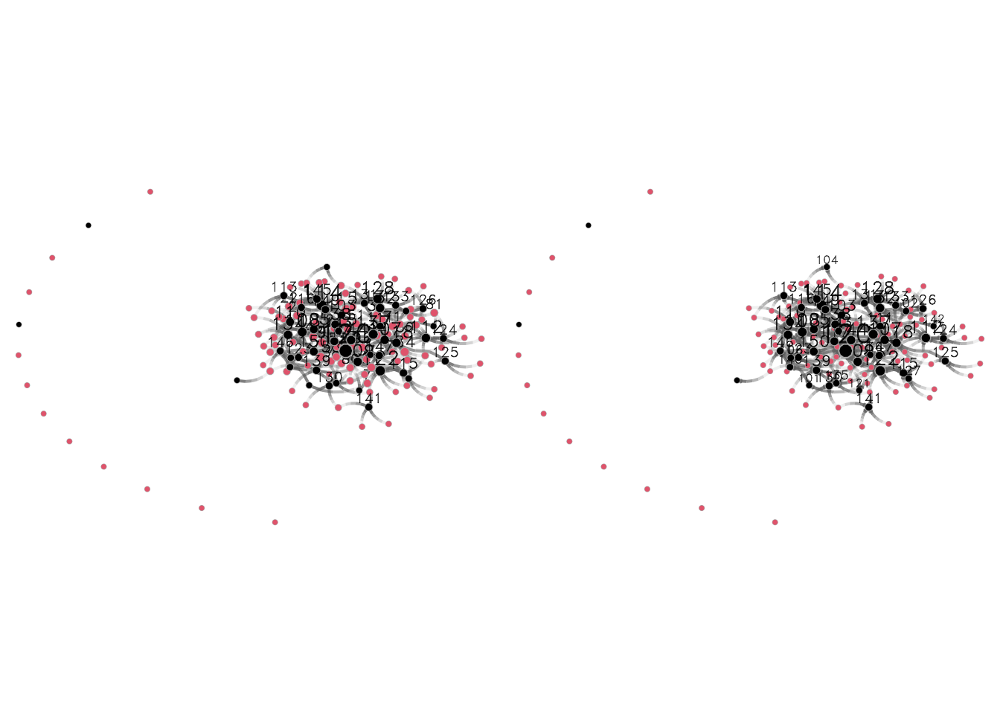

library(sna)
library(ergm)
library(ergmito)
## Loading five artificial networks (5 networks)
data(fivenets)
## Taking a look at the first two
fivenets[1:2]
## [[1]]
## Network attributes:
## vertices = 4
## directed = TRUE
## hyper = FALSE
## loops = FALSE
## multiple = FALSE
## bipartite = FALSE
## total edges= 2
## missing edges= 0
## non-missing edges= 2
##
## Vertex attribute names:
## female name
##
## No edge attributes
##
## [[2]]
## Network attributes:
## vertices = 4
## directed = TRUE
## hyper = FALSE
## loops = FALSE
## multiple = FALSE
## bipartite = FALSE
## total edges= 7
## missing edges= 0
## non-missing edges= 7
##
## Vertex attribute names:
## female name
##
## No edge attributes10 Advanced ERGMs: Constraints
10.1 Introduction
For this section, we will dive in into ERGM constranints. Using constraints, you will be able to modify the sampling space of the model to things such as:
- Pool (multilevel) models.
- Accounting for data generating process.
- Make your model behave (with caution.)
- Even fit Discrete-Exponential Family Models (DEFM.)
We will start with formally understanding what constraining the space means and then continue with some examples.
10.2 Constraining ERGMs
Exponential Random Graph Models [ERGMs] can represent a variety of network classes. We often look at “regular” social networks like school students, colleagues in the workplace, or families. Nonetheless, some social networks we study have features that restrict how connections can occur. Typical examples are bi-partite graphs and multilevel networks. There are two classes of vertices in bi-partite networks, and ties can only occur between classes. On the other hand, multilevel networks may feature multiple classes with inter-class ties that are somewhat restricted. Structural constraints exist in both cases, meaning some configurations may not be plausible.
Mathematically, what we are trying to do is, instead of assuming that all network configurations are possible:
\left\{\bm{{y}} \in \mathcal{Y}: y_{ij} = 0, \forall i = j\right\}
we want to go a bit further avoiding loops, namely:
\left\{\bm{{y}} \in \mathcal{Y}: y_{ij} = 0, \forall i = j; \mathbf{y} \in C\right\},
where C is a constraint, for example, only networks with no triangles. The ergm R package has built-in capabilities to deal with some of these cases. Nonetheless, we can specify models with arbitrary structural constraints built into the model. The key is in using offset terms.
10.3 Example 1: Pool (block-diagonal/multilevel) ERGM
Nowadays, multi-network studies featuring a large sample of networks are easy to see. When we deal with multiple networks, there are usually two approaches to analyzing them: (a) estimate separate ERGMs and do a meta-analysis like in [ANN CITATION], or (b) fit a pooled ERGM. Here, we will follow the latter.
Pooled ERGMs resemble typical statistical methods. Assuming that the networks are independent, we can estimate a model like the following:
P_{\mathcal{Y}, \bm{{\theta}}}(\bm{{Y}}_1=\bm{{y}}_1, \bm{{Y}}_2=\bm{{y}}_2, \dots, \bm{{Y}}_1=\bm{{y}}_L) = \prod_l^L \exp\left(\bm{{\theta}}^{\mathbf{t}} s(y_l)\right)\kappa_l(\bm{{\theta}})^{-1}
In this case, we assume that all networks have the same data-generating process, meaning they all come from the same \mathcal{Y}. If that’s not the case and, like in any regression analysis, we could write a hierarchical model where model parameters come from the same distribution or fit a random effects ERGM as described in Slaughter and Koehly (2016).
We have a handful of different ways of fitting pooled ERGMs. If you are dealing with small networks (about six nodes if directed and eight if undirected,) you can use the ergmito R package (G. G. Vega Yon, Slaughter, and Haye 2021; G. Vega Yon 2020). The ergm package can still assist you with simple models if you have larger networks. But if you want to leverage the power of having multiple networks, the recently published ergm.multi R package should be your choice (Krivitsky, Coletti, and Hens 2023; Krivitsky 2023). Since we are learning to use constraints, we will use the ergm package. Let’s start with an example from the ergmito R package:
We can also visualize these five networks:
## Quickly visualizing fine networks
op <- par(mfrow = c(2, 3), mar = c(1,1,1,1)/2)
res <- lapply(fivenets, \(x) {gplot(x); box()})
par(op)
These five networks were generated using an edges+gender homophily model. Since all the graphs in the list are small (five vertices each,) we can fit a pooled ERGM using the ergmito function from the package of the same name:
summary(ergmito(fivenets ~ edges + nodematch("female")))
ERGMito estimates (MLE)
This model includes 5 networks.
formula:
fivenets ~ edges + nodematch("female")
Estimate Std. Error z value Pr(>|z|)
edges -1.70475 0.54356 -3.1363 0.001711 **
nodematch.female 1.58697 0.64305 2.4679 0.013592 *
---
Signif. codes: 0 '***' 0.001 '**' 0.01 '*' 0.05 '.' 0.1 ' ' 1
AIC: 73.34109 BIC: 77.52978 (Smaller is better.) The question is: How can we use constraints to fit the same model using the ergm package? We have to follow these steps:
We must combine all the networks into a single network object.
Specify the constraint via the
constraintargument in theergmfunction. In this case, use theblockdiagconstraint (check out the manual?ergm.constraintsto learn more about what’s available with the tool).Fit the model!
The ergmito package has a convenient function that will take any list of network objects (or matrices) and turn it into a single network. The passed networks don’t need to have the same size. After combining the networks, the function creates a new vertex attribute that holds the id of the original group.
## Combining the networks
bd <- blockdiagonalize(fivenets)
bd Network attributes:
vertices = 20
directed = TRUE
hyper = FALSE
loops = FALSE
multiple = FALSE
bipartite = FALSE
total edges= 20
missing edges= 0
non-missing edges= 20
Vertex attribute names:
block female name_original vertex.names
No edge attributesJust out of curiosity, what would we get if we fitted a regular ERGM to this data? Here is the answer:
ergm(bd ~ edges + nodematch("female"))
Call:
ergm(formula = bd ~ edges + nodematch("female"))
Maximum Likelihood Coefficients:
edges nodematch.female
-3.882 1.542 i.e.*, biased estimates. Although the homophily term is very similar to the original estimate, the edges parameter is twice the size. The estimate is inflated because the support of this model includes networks where there are ties between the groups, yet these networks cannot be connected one another.
To solve this issue, as we said, we use the constraints:
ergm(bd ~ edges + nodematch("female"), constraints = ~ blockdiag("block"))
Call:
ergm(formula = bd ~ edges + nodematch("female"), constraints = ~blockdiag("block"))
Maximum Likelihood Coefficients:
edges nodematch.female
-1.705 1.587 Success! This model is now correctly specified. Although it seems like we have a single network, by imposing the blockdiagonal constraint, we are fitting a pooled model. The ergm package comes with more alternatives to restricting the sample space of your model, but there may be a case where you need more. For those cases, the offset comes in handy.
10.4 Example 2: Interlocking egos and disconnected alters1
Imagine that we have two sets of vertices. The first, group E, are egos in an egocentric study. The second group, called A, is composed of people mentioned by egos in E but were not surveyed. Assume that individuals in A can only connect to individuals in E; moreover, individuals in E have no restrictions on connecting. In other words, only two types of ties exist: E-E and A-E. The question is now, how can we enforce such a constraint in an ERGM?
Using offsets, and in particular, setting coefficients to -Inf provides an easy way to restrict the support set of ERGMs. For example, if we wanted to constrain the support to include networks with no triangles, we would add the term offset(triangle) and use the option offset.coef = -Inf to indicate that realizations including triangles are not possible. Using R:
ergm(net ~ edges + offset(triangle), offset.coef = -Inf)In this model, a Bernoulli graph, we reduce the sample space to networks with no triangles. In our example, such a statistic should only take non-zero values whenever ties within the A class happen. We can use the nodematch() term to do that. Formally
\text{NodeMatch}(x) = \sum_{i,j} y_{ij} \mathbf{1}({x_{i} = x_{j}})
This statistic will sum over all ties in which source (i) and target (j)’s X attribute is equal. One way to make this happen is by creating an auxiliary variable that equals, e.g., 0 for all vertices in A, and a unique value different from zero otherwise. For example, if we had 2 As and three Es, the data would look like \{0,0,1,2,3\}. The following code block creates an empty graph with 50 nodes, 10 of which are in group E (ego).
library(ergm, quietly = TRUE)
library(sna, quietly = TRUE)
n <- 50
n_egos <- 10
net <- as.network(matrix(0, ncol = n, nrow = n), directed = TRUE)
## Let's assing the groups
net %v% "is.ego" <- c(rep(TRUE, n_egos), rep(FALSE, n - n_egos))
net %v% "is.ego" [1] TRUE TRUE TRUE TRUE TRUE TRUE TRUE TRUE TRUE TRUE FALSE FALSE
[13] FALSE FALSE FALSE FALSE FALSE FALSE FALSE FALSE FALSE FALSE FALSE FALSE
[25] FALSE FALSE FALSE FALSE FALSE FALSE FALSE FALSE FALSE FALSE FALSE FALSE
[37] FALSE FALSE FALSE FALSE FALSE FALSE FALSE FALSE FALSE FALSE FALSE FALSE
[49] FALSE FALSEgplot(net, vertex.col = net %v% "is.ego")
To create the auxiliary variable, we will use the following function:
## Function that creates an aux variable for the ergm model
make_aux_var <- function(my_net, is_ego_dummy) {
n_vertex <- length(my_net %v% is_ego_dummy)
n_ego_ <- sum(my_net %v% is_ego_dummy)
# Creating an auxiliary variable to identify the non-informant non-informant ties
my_net %v% "aux_var" <- ifelse(
!my_net %v% is_ego_dummy, 0, 1:(n_vertex - n_ego_)
)
my_net
}Calling the function in our data results in the following:
net <- make_aux_var(net, "is.ego")
## Taking a look over the first 15 rows of data
cbind(
Is_Ego = net %v% "is.ego",
Aux = net %v% "aux_var"
) |> head(n = 15) Is_Ego Aux
[1,] 1 1
[2,] 1 2
[3,] 1 3
[4,] 1 4
[5,] 1 5
[6,] 1 6
[7,] 1 7
[8,] 1 8
[9,] 1 9
[10,] 1 10
[11,] 0 0
[12,] 0 0
[13,] 0 0
[14,] 0 0
[15,] 0 0We can now use this data to simulate a network in which ties between A-class vertices are not possible:
set.seed(2828)
net_sim <- simulate(net ~ edges + nodematch("aux_var"), coef = c(-3.0, -Inf))
gplot(net_sim, vertex.col = net_sim %v% "is.ego")
As you can see, this network has only ties of the type E-E and A-E. We can double-check by (i) looking at the counts and (ii) visualizing each induced-subgraph separately:
summary(net_sim ~ edges + nodematch("aux_var")) edges nodematch.aux_var
49 0 net_of_alters <- get.inducedSubgraph(
net_sim, which((net_sim %v% "aux_var") == 0)
)
net_of_egos <- get.inducedSubgraph(
net_sim, which((net_sim %v% "aux_var") != 0)
)
## Counts
summary(net_of_alters ~ edges + nodematch("aux_var")) edges nodematch.aux_var
0 0 summary(net_of_egos ~ edges + nodematch("aux_var")) edges nodematch.aux_var
1 0 ## Figures
op <- par(mfcol = c(1, 2))
gplot(net_of_alters, vertex.col = net_of_alters %v% "is.ego", main = "A")
gplot(net_of_egos, vertex.col = net_of_egos %v% "is.ego", main = "E")
par(op)Now, to fit an ERGM with this constraint, we simply need to make use of the offset terms. Here is an example:
ans <- ergm(
net_sim ~ edges + offset(nodematch("aux_var")), # The model (notice the offset)
offset.coef = -Inf # The offset coefficient
)
## Starting maximum pseudolikelihood estimation (MPLE):
## Obtaining the responsible dyads.
## Evaluating the predictor and response matrix.
## Maximizing the pseudolikelihood.
## Finished MPLE.
## Evaluating log-likelihood at the estimate.
summary(ans)
## Call:
## ergm(formula = net_sim ~ edges + offset(nodematch("aux_var")),
## offset.coef = -Inf)
##
## Maximum Likelihood Results:
##
## Estimate Std. Error MCMC % z value Pr(>|z|)
## edges -2.843 0.147 0 -19.34 <1e-04 ***
## offset(nodematch.aux_var) -Inf 0.000 0 -Inf <1e-04 ***
## ---
## Signif. codes: 0 '***' 0.001 '**' 0.01 '*' 0.05 '.' 0.1 ' ' 1
##
## Null Deviance: 1233.8 on 890 degrees of freedom
## Residual Deviance: 379.4 on 888 degrees of freedom
##
## AIC: 381.4 BIC: 386.2 (Smaller is better. MC Std. Err. = 0)
##
## The following terms are fixed by offset and are not estimated:
## offset(nodematch.aux_var)This ERGM model–which by the way only featured dyadic-independent terms, and thus can be reduced to a logistic regression–restricts the support by excluding all networks in which ties within the class A exists. To finalize, let’s look at a few simulations based on this model:
set.seed(1323)
op <- par(mfcol = c(2,2), mar = rep(1, 4))
for (i in 1:4) {
gplot(simulate(ans), vertex.col = net %v% "is.ego", vertex.cex = 2)
box()
}
par(op)All networks with no ties between A nodes.
10.5 Example 3: Bi-partite networks
In the case of bipartite networks (sometimes called affiliation networks,) we can use ergm’s terms for bipartite graphs to corroborate what we discussed here. For example, the two-star term. Let’s start simulating a bipartite network using the edges and two-star parameters. Since the k-star term is usually complex to fit (tends to generate degenerate models,) we will take advantage of the Log() transformation function in the ergm package to smooth the term.2
The bipartite network that we will be simulating will have 100 actors and 50 entities. Actors, which we will map to the first level of the ergm terms, this is, b1star b1nodematch, etc. will send ties to the entities, the second level of the bipartite ERGM. To create a bipartite network, we will create an empty matrix of size nactors x nentitites; thus, actors are represented by rows and entities by columns.
## Parameters for the simulation
nactors <- 100
nentities <- floor(nactors/2)
n <- nactors + nentities
## Creating an empty bipartite network (baseline)
net_b <- network(
matrix(0, nrow = nactors, ncol = nentities), bipartite = TRUE
)
## Simulating the bipartite ERGM,
net_b <- simulate(net_b ~ edges + Log(~b1star(2)), coef = c(-3, 1.5), seed = 55)Let’s see what we got here:
summary(net_b ~ edges + Log(~b1star(2))) edges Log~b1star2
245.000000 5.746203 netplot::nplot(net_b, vertex.col = (1:n <= nactors) + 1)
Notice that the first nactors vertices in the network are the actors, and the remaining are the entities. Now, although the ergm package features bipartite network terms, we can still fit a bipartite ERGM without explicitly declaring the graph as such. In such case, the b1star(2) term of a bipartite network is equivalent to an ostar(2) in a directed graph. Likewise, b2star(2) in a bipartite graph matches the istar(2) term in a directed graph. This information will be relevant when fitting the ERGM. Let’s transform the bipartite network into a directed graph. The following code block does so:
## Identifying the edges
net_not_b <- which(as.matrix(net_b) != 0, arr.ind = TRUE)
## We need to offset the endpoint of the ties by nactors
## so that the ids go from 1 through (nactors + nentitites)
net_not_b[,2] <- net_not_b[,2] + nactors
## The resulting graph is a directed network
net_not_b <- network(net_not_b, directed = TRUE)Now we are almost done. As before, we need to use node-level covariates to put the constraints in our model. For this ERGM to reflect an ERGM on a bipartite network, we need two constraints:
- Only ties from actors to entities are allowed, and
- entities can only receive ties.
The corresponding offset terms for this model are: nodematch("is.actor") ~ -Inf, and nodeocov("isnot.actor") ~ -Inf. Mathematically:
\begin{align*} \text{NodeMatch(x = "is.actor")} &= \sum_{i<j} y_{ij}\mathbb{1}\left(x_i = x_j\right) \\ \text{NodeOCov(x = "isnot.actor")} &= \sum_{i} x_i \times \sum_{j<i} y_{ij} \end{align*}
In other words, we are setting that ties between nodes of the same class are forbidden, and outgoing ties are forbidden for entities. Let’s create the vertex attributes needed to use the aforementioned terms:
net_not_b %v% "is.actor" <- as.integer(1:n <= nactors)
net_not_b %v% "isnot.actor" <- as.integer(1:n > nactors)Finally, to make sure we have done all well, let’s look how both networks–bipartite and unimodal–look side by side:
## First, let's get the layout
fig <- netplot::nplot(net_b, vertex.col = (1:n <= nactors) + 1)
gridExtra::grid.arrange(
fig,
netplot::nplot(
net_not_b, vertex.col = (1:n <= nactors) + 1,
layout = fig$.layout
),
ncol = 2, nrow = 1
)
## Looking at the counts
summary(net_b ~ edges + b1star(2) + b2star(2)) edges b1star2 b2star2
245 313 645 summary(net_not_b ~ edges + ostar(2) + istar(2)) edges ostar2 istar2
245 313 645 With the two networks matching, we can now fit the ERGMs with and without offset terms and compare the results between the two models:
## ERGM with a bipartite graph
res_b <- ergm(
# Main formula
net_b ~ edges + Log(~b1star(2)),
# Control parameters
control = control.ergm(seed = 1)
)
## ERGM with a digraph with constraints
res_not_b <- ergm(
# Main formula
net_not_b ~ edges + Log(~ostar(2)) +
# Offset terms
offset(nodematch("is.actor")) + offset(nodeocov("isnot.actor")),
offset.coef = c(-Inf, -Inf),
# Control parameters
control = control.ergm(seed = 1)
)Here are the estimates (using the texreg R package for a prettier output):
texreg::screenreg(list(Bipartite = res_b, Directed = res_not_b))
======================================================================
Bipartite Directed
----------------------------------------------------------------------
edges -3.14 *** -3.11 ***
(0.15) (0.14)
Log~b1star2 21.89
(17.13)
Log~ostar2 19.66
(16.75)
offset(nodematch.is.actor) -Inf
offset(nodeocov.isnot.actor) -Inf
----------------------------------------------------------------------
AIC 1958.00 -2134192392498170112.00
BIC 1971.03 -2134192392498170112.00
Log Likelihood -977.00 1067096196249085056.00
======================================================================
*** p < 0.001; ** p < 0.01; * p < 0.05As expected, both models yield the “same” estimate. The minor differences observed between the models are how the ergm package performs the sampling. In particular, in the bipartite case, ergm has special routines for making the sampling more efficient, having a higher acceptance rate than that of the model in which the bipartite graph was not explicitly declared. We can tell this by inspecting rejection rates:
data.frame(
Bipartite = coda::rejectionRate(res_b$sample[[1]]) * 100,
Directed = coda::rejectionRate(res_not_b$sample[[1]][, -c(3,4)]) * 100
) |> knitr::kable(digits = 2, caption = "Rejection rate (percent)")| Bipartite | Directed | |
|---|---|---|
| edges | 2.48 | 3.67 |
| Log~b1star2 | 1.24 | 2.04 |
The ERGM fitted with the offset terms has a much higher rejection rate than that of the ERGM fitted with the bipartite ERGM.
Finally, the fact that we can fit ERGMs using offset does not mean that we need to use it ALL the time. Unless there is a very good reason to go around ergm’s capabilities, I wouldn’t recommend fitting bipartite ERGMs as we just did, as the authors of the package have included (MANY) features to make our job easier.
Thanks to Laura Koehly, who devised this complicated model.↩︎
After writing this example, it became apparent the use of the
Log()transformation function may not be ideal. Since many terms used in ERGMs can be zero, e.g., triangles, the termLog(~ ostar(2))is undefined whenostar(2) = 0. In practice, the ERGM package sets a lower limit for the log of 0, so, instead of havingLog(0) ~ -Inf, they set it to be a really large negative number. This causes all sorts of issues to the estimates; in our example, an overestimation of the population parameter and a positive log-likelihood. Therefore, I wouldn’t recommend using this transformation too often.↩︎